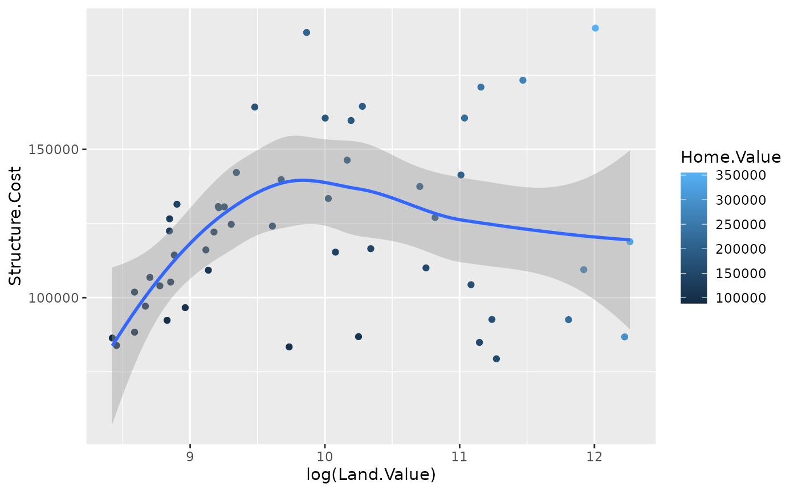
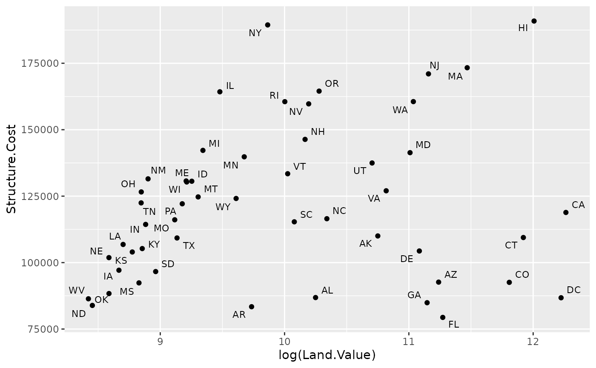
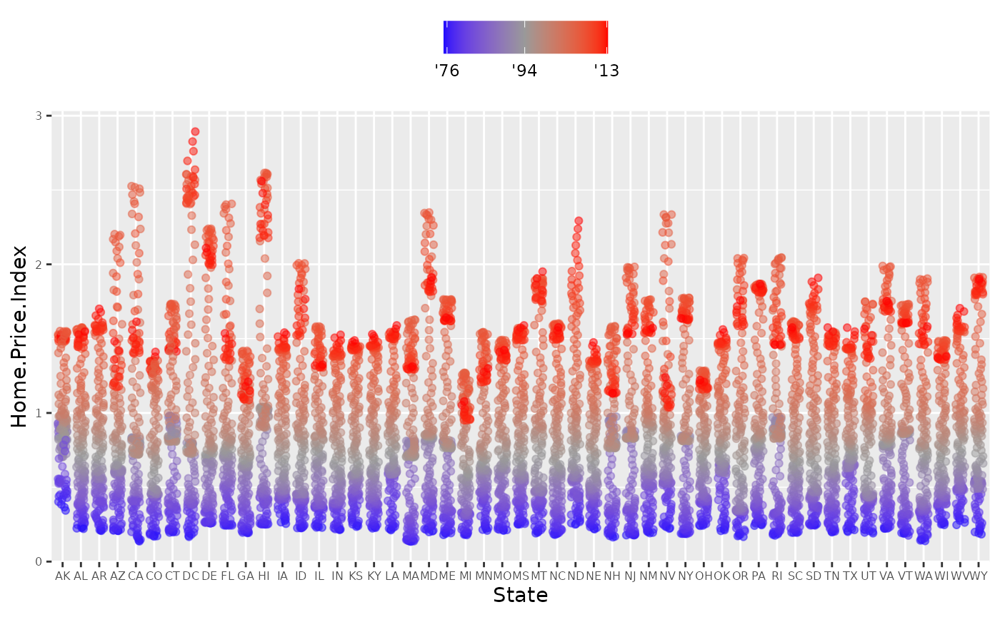

ggplot
Tutorial from here: https://tutorials.iq.harvard.edu/R/Rgraphics/Rgraphics.html#geometric_objects_and_aesthetics
ggplot implements a new grammar for plotting. Uses building blocks to create the final plot:
- data
- aesthetic mapping
- geometric object
- statistical transformations
- scales
- coordinate system
- position adjustments
- faceting
##
## Attaching package: 'dplyr'## The following objects are masked from 'package:stats':
##
## filter, lag## The following objects are masked from 'package:base':
##
## intersect, setdiff, setequal, union## Loading required package: ggplot2##
## Attaching package: 'plotly'## The following object is masked from 'package:ggplot2':
##
## last_plot## The following object is masked from 'package:stats':
##
## filter## The following object is masked from 'package:graphics':
##
## layout
housing <- read_csv("../inst/extdata/landdata-states.csv")## Rows: 7803 Columns: 11## ── Column specification ────────────────────────────────────────────────────────
## Delimiter: ","
## chr (2): State, region
## dbl (9): Date, Home.Value, Structure.Cost, Land.Value, Land.Share..Pct., Hom...
##
## ℹ Use `spec()` to retrieve the full column specification for this data.
## ℹ Specify the column types or set `show_col_types = FALSE` to quiet this message.
library(ggplot2)
ggplot(housing, aes(x = Home.Value)) +
geom_histogram()## `stat_bin()` using `bins = 30`. Pick better value with `binwidth`.
housing %>%
filter(State %in% c("MA", "TX")) %>%
ggplot()+
geom_point(aes(x=Date,
y=Home.Value, color=State))+
geom_point(aes(x=Land.Value, y=Structure.Cost))Aesthetics and geometric objects
Aesthetic is something one can see and related to the dataset. Geometric objects give the layout of the plot.
hp2001Q1 <- filter(housing, Date == 2001.25)
ggplot(hp2001Q1,
aes(y = Structure.Cost, x = Land.Value)) +
geom_point(aes(x=Date,
y=Home.Value))One plot can have multpile geoms:
p1 <- ggplot(hp2001Q1, aes(x = log(Land.Value), y = Structure.Cost))
p1 + geom_point(aes(color = Home.Value)) +
geom_smooth()## `geom_smooth()` using method = 'loess' and formula 'y ~ x'
p1 +
geom_point(aes(color = Home.Value)) +
geom_smooth(method = "lm")## `geom_smooth()` using formula 'y ~ x'Different geoms can have different aesthetics.
## install.packages("ggrepel")
library("ggrepel")
p1 +
geom_point() +
geom_text_repel(aes(label=State), size = 3)
Aesthetics vs. assignments
p1 +
geom_point(aes(size = 2),# incorrect! 2 is not a variable
color="red") # this is fine -- all points red
p1 +
geom_point(aes(color=Home.Value, shape = region))## Warning: Removed 1 rows containing missing values (geom_point).
p2 <- ggplot(housing, aes(x = Home.Value))
p2 + geom_histogram()## `stat_bin()` using `bins = 30`. Pick better value with `binwidth`.
p2 + geom_histogram(stat = "bin", binwidth=4000)
housing.sum <- aggregate(housing["Home.Value"], housing["State"], FUN=mean)
rbind(head(housing.sum), tail(housing.sum))## State Home.Value
## 1 AK 147385.14
## 2 AL 92545.22
## 3 AR 82076.84
## 4 AZ 140755.59
## 5 CA 282808.08
## 6 CO 158175.99
## 46 VA 155391.44
## 47 VT 132394.60
## 48 WA 178522.58
## 49 WI 108359.45
## 50 WV 77161.71
## 51 WY 122897.25Scale modifications
p3 <- ggplot(housing,
aes(x = State,
y = Home.Price.Index)) +
theme(legend.position="top",
axis.text=element_text(size = 6))
p4 <- p3 + geom_point(aes(color = Date),
alpha = 0.5,
size = 1.5,
position = position_jitter(width = 0.25, height = 0))
p4 + scale_x_discrete(name="State Abbreviation") +
scale_color_continuous(name="",
breaks = c(1976, 1994, 2013),
labels = c("'76", "'94", "'13"))
p4 +
scale_x_discrete(name="State Abbreviation") +
scale_color_continuous(name="",
breaks = c(1976, 1994, 2013),
labels = c("'76", "'94", "'13"),
type="viridis")
p4 +
scale_color_gradient2(name="",
breaks = c(1976, 1994, 2013),
labels = c("'76", "'94", "'13"),
low = "blue",
high = "red",
mid = "gray60",
midpoint = 1994)
Faceting
p5 <- housing %>%
filter(State %in% c("MA", "TX")) %>%
ggplot(aes(x = Date, y = Home.Value))
p5 + geom_line(aes(color = State))
(p5 <- p5 + geom_line() +
facet_wrap(~State, ncol = 10))There is also a facet_grid() function for faceting in two dimensions.
##Themes
p5 + theme_linedraw()
p5 + theme_light()Overriding theme defaults
Specific theme elements can be overridden using theme(). For example:
p5 + theme_minimal() +
theme(text = element_text(color = "turquoise"))All theme options are documented in ?theme.
Creating and saving new themes
You can create new themes, as in the following example:
theme_new <- theme_bw() +
theme(plot.background = element_rect(size = 1, color = "blue", fill = "black"),
text=element_text(size = 12, family = "Serif", color = "ivory"),
axis.text.y = element_text(colour = "purple"),
axis.text.x = element_text(colour = "red"),
panel.background = element_rect(fill = "pink"),
strip.background = element_rect(fill = "orange"))
p5 + theme_newExercises
- Use the iris dataset.
- plot a dotplot using sepal.length and sepal.width
- Color the dots by Species
- Add linear regression curve for the whole dataset
- Add linear regression curve colored by species
- plot boxplots for sepal length, one for each species, with different color
- plot dots on the boxplot
- Change the colors to red, blue and green.
- change axis labels 10 Flip the coordinates
- Change the theme to theme_bw
data(iris)